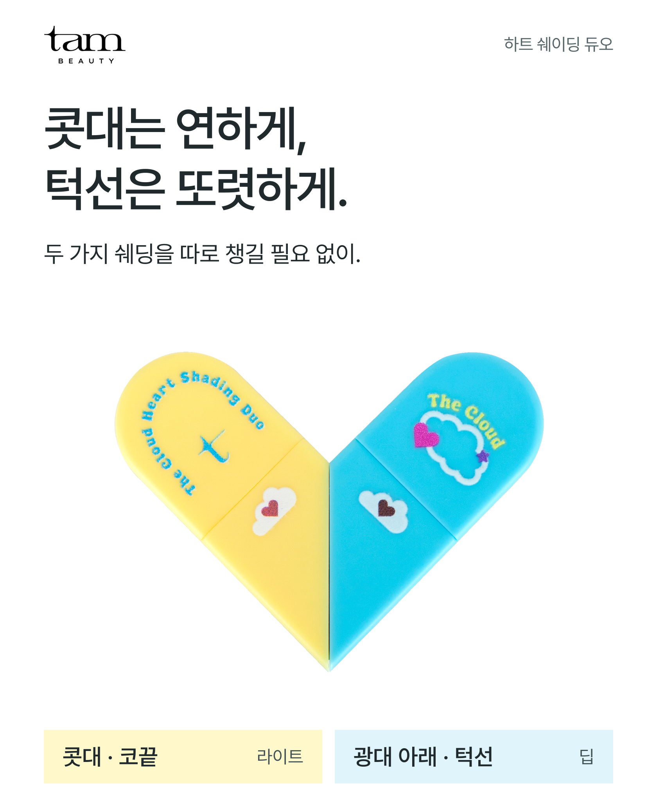
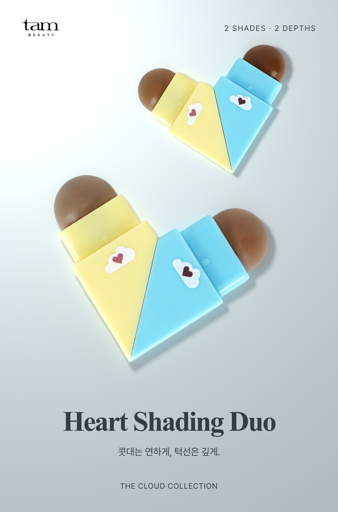
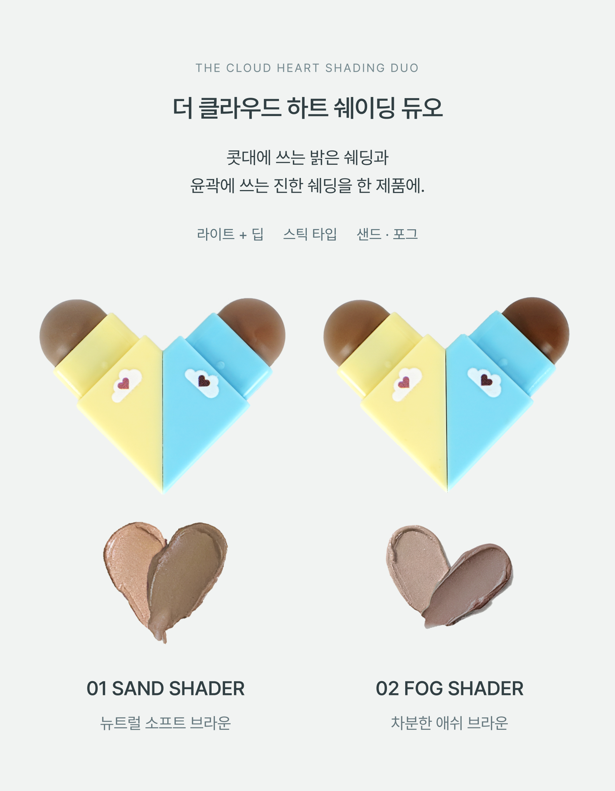

TAM BEAUTY / DESIGN REVIEW / 2026.10.21
글을 줄여도, 구매할 이유가 보이지 않았습니다.
자체 판정: V6도 판매용 최종안으로 채택하지 않습니다.
사진 배치만 바꿔서는 흐릿한 발색과 사용 결과의 빈칸이 해결되지 않았습니다. 아래는 잘못된 판단과 재구성의 한계를 함께 확인하는 비교 기록입니다.
V5는 거부된 시안입니다. 닫힌 용기와 큰 글씨를 반복하면서 제품의 두 색, 선택 기준, 사용 결과를 충분히 보여주지 못했습니다. 파일 검사를 통과한 것을 시각적 완성으로 판단한 것도 잘못이었습니다.
구조 검토본 전체 보기 · 미승인 검토 패키지 · 상세 분석 기록
01. 첫 화면 — 같은 폭에서 비교
기존 V5 · 거부
큰 문장과 닫힌 패키지. 브라운 제형이 보이지 않아 쉐딩을 소개하는 힘이 약했습니다.
기준 · 투쿨포스쿨
제품이 공간을 차지하고, 이름은 아래에서 받칩니다. 공식 출처 TAM V6 · 검토안
TAM V6 · 검토안
열린 제품과 두 브라운을 먼저 배치했습니다. 실물 누끼 사진에 바닥과 그림자를 합성한 연출입니다.
02. 제품과 색상 — 반복 대신 선택
기준 · 투쿨포스쿨
옵션별 제품과 색을 한 흐름으로 보여줍니다. 타사 사진·문안은 TAM 등록물에 사용하지 않았습니다. TAM V6
TAM V6
샌드·포그는 두 옵션. 각 옵션 안에 라이트·딥이 있다는 관계를 분리했습니다.
03. 아직 해결되지 않은 가장 큰 차이
바르면 어떻게 달라지는지 보여줄 실제 얼굴 결과가 없습니다.
타사는 실제 도포·블렌딩·얼굴 결과로 설명을 뒷받침합니다. 현재 사용할 수 있는 TAM 자료에서는 해당 근거를 확보하지 못했습니다. 이 빈칸은 카피나 새 렌더로 해결되지 않습니다. V6는 구성 검토안이며 판매용 최종본으로 판정하지 않았습니다.
- 구매 이유의 범위: 코에는 밝게, 윤곽에는 깊게 쓸 두 쉐딩이 한 제품에 있다는 편의. 독보적 성능이나 실패 없는 효과로 확대하지 않습니다.
- 화질의 범위: 무손실 PNG로 재출력했지만 원본의 부드러운 초점까지 복구된 것은 아닙니다.
- 필요한 보완: 동일 조명에서 밝은 쪽 콧대 도포, 진한 쪽 턱선 도포, 블렌딩 후 결과. 실제 촬영 자료가 확보되어야 설득력이 완성됩니다.
사용자 시각 승인 대기 · Cafe24 실제 업로드는 보류
경쟁사 이미지는 출처 비교를 위한 공식 URL 표시이며 TAM 상품 이미지에 포함하지 않았습니다.